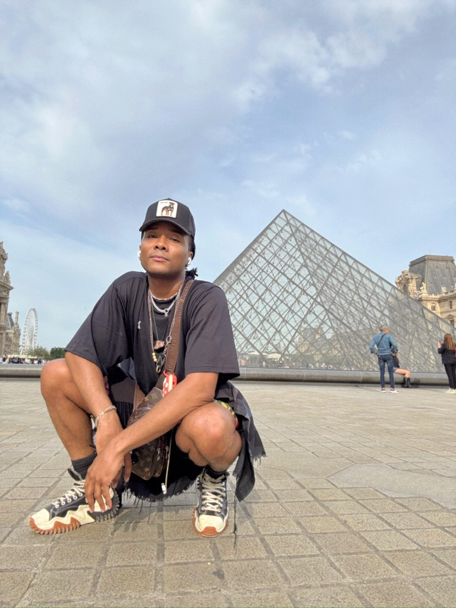

My creative work lives at the intersection of performance, visual media, and storytelling. I come from a background in dance, choreography, and aerial arts, so I understand communication through the body first. Movement taught me about rhythm, tension, space, and emotional pacing long before I ever worked with cameras or digital design. Growing up between the South and the Midwest shaped how I see people, community, and expression, and that cultural foundation continues to inform my work.
As I expand into acting, producing, and directing, I carry both this physical awareness and lived perspective into every medium I use. I do not see media as flat images. I see it as lived experience shaped through timing, framing, and presence.
I am especially drawn to telling Black and queer stories, with a focus on joy, complexity, and visibility. I am interested in how stories move between bodies and screens, and how design and performance together shape emotion and perception. Whether I am performing, filming, designing, or developing interactive work, I focus on how an audience feels inside a moment. I think about pacing like choreography and space like staging, while acting and directing deepen my focus on character and narrative.
Producing helps me understand the systems that turn creative visions into real experiences. My goal is to create immersive, intentional, and human work where emotion, identity, and environment connect, turning observation into participation and visuals into lived moments.
These links will redirect to separate pages as I complete each assignment.